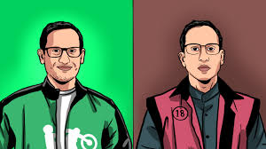

HOME | PROFIL | ABOUT | GALERY | KONTAK
 PT Goto TBK bersama jajaran Direksi, Karyawan, dan Mitra Driver Gojek menggelar doa lintas agama dan silaturahmi keluarga besar Goto dalam acara tersebut PT Goto TBK memberikan santunan kepada keluarga Affan Kurniawan dan santunan anak yatim. Acara juga dihadiri oleh sejumlah tokoh lintas agama seperti Ustaz Habib Jafar, Pendeta Marcel Saerang, Bikkhu Bhadra Natha Thera, Js Kristan, Yan Mitha Djaksana, dan Antonius Suyadi. Doa lintas agama yang dipanjatkan di masjid itu ditujukan untuk Indonesia agar dapat terhindar dari perpecahan dan senantiasa berada dalam situasi yang damai. Acara Doa Lintas Agama juga turut memberikan penyerahan santunan senilai Rp 150 juta yang berasal dari urunan karyawan GoTo untuk keluarga almarhum Affan Kurniawan. Selain itu, pihak GoTo akan memberi beasiswa pendidikan untuk adik dari almarhum Affan dan pekerjaan untuk kakak dari almarhum Affan.